Prueba Suficiencia Academica
Este examen ha sido creado en base a exámenes de admisión de diferentes gestiones de la universidad, con el objetivo de brindarte una práctica más realista y efectiva para tu preparación académica. (SE ACTUALIZA CADA AÑO)
1. Resolver:
¿Cuál de las siguientes afirmaciones define correctamente la gingivitis desde el punto de vista periodontal?


2. Resolver:
¿Cuál de las siguientes opciones describe con mayor precisión el concepto de osteointegración en implantología dental?
3. Resolver:
¿En cuál de las siguientes enfermedades sistémicas es característica la presencia de microstomía, manifestada por una reducción de la apertura bucal debido al endurecimiento y retracción de la piel perioral?
4. Resolver:
¿Cuál es el principal objetivo del glaseado aplicado a las restauraciones cerámicas dentales?
5. Resolver:
¿Cuál es la causa más frecuente del epulis fisuratum, una lesión hiperplásica de la mucosa oral asociada al uso de prótesis dentales?
6. Resolver:
¿Cuál es la principal utilidad clínica del plano oclusal en el análisis y tratamiento odontológico?
7. Resolver:
¿En cuál de las siguientes glándulas salivales se localiza con mayor frecuencia la sialolitiasis (formación de cálculos salivales)?
8. Resolver:
En un paciente con indicación de profilaxis antibiótica para prevenir la endocarditis infecciosa antes de un procedimiento odontológico y sin antecedentes de alergia a la penicilina, ¿cuál es el antibiótico de elección administrado por vía oral?
9. Resolver:
¿Cuál de las siguientes sustancias se utiliza como agente activo en procedimientos de blanqueamiento dental para reducir la pigmentación y aclarar el color de los dientes?
10. Resolver:
¿Cuál de los siguientes ácidos se utiliza habitualmente en odontología para realizar el grabado ácido del esmalte con el objetivo de aumentar su microrretención y favorecer la adhesión de materiales restauradores?
11. Resolver:
¿Cuál de las siguientes técnicas radiográficas es la más apropiada para detectar lesiones de caries ubicadas en las superficies proximales de los dientes posteriores?
12. Resolver:
¿Cuál de las siguientes opciones NO corresponde a una complicación postoperatoria habitual asociada a procedimientos de cirugía bucal, como la extracción dental?
13. Resolver:
¿En cuál de los siguientes huesos se encuentran las apófisis geni, estructuras óseas ubicadas en la superficie interna de la región anterior de la mandíbula?
14. Resolver:
¿Qué investigador desarrolló la resina Bis-GMA, material que marcó el inicio de la denominada “era adhesiva” en la odontología restauradora?
15. Resolver:
¿Cuál es una de las principales funciones de la odontología forense en el ámbito de la identificación de personas?
16. Resolver:
¿Cuál de los siguientes materiales de impresión NO pertenece al grupo de los elastómeros utilizados en odontología?
17. Resolver:
¿Cuál de las siguientes patologías constituye una de las principales indicaciones para el uso de estudios radiográficos con contraste en odontología, particularmente en la evaluación de las glándulas salivales?
18. Resolver:
En la elaboración de una historia clínica odontológica, ¿qué etapa se realiza habitualmente después de completar la anamnesis?
19. Resolver:
¿Cuál de las siguientes manifestaciones orales puede presentarse como efecto adverso asociado al uso de determinados fármacos antihipertensivos?
20. Resolver:
¿En cuál de las siguientes enfermedades periimplantarias se presenta pérdida de hueso de soporte alrededor de un implante dental, asociada a un proceso inflamatorio de los tejidos periimplantarios?
21. Resolver:
Marque la alternativa donde aparecen nombres de países que forman parte del área dialectal actual de la lengua española.
22. Resolver:
En el enunciado «los niños actúan de la misma forma como ustedes actúan en los sismos», las palabras subrayadas mantienen relación semántica de
23. Resolver:
Elija la alternativa que presenta frase nominal compleja.
24. Resolver:
En el enunciado «el presidente anunció el alza del impuesto selectivo al consumo», las frases nominales cumplen, respectivamente, las funciones de
25. Resolver:
Indique la opción donde hay perífrasis verbal.
26. Resolver:
Marque la opción en la cual el verbo expresa aspecto perfectivo.
27. Resolver:
Seleccione la opción que presente una oración compuesta coordinada conjuntiva copulativa.
28. Resolver:
Seleccione la opción que presenta una oración intransitiva.
29. Resolver:
En el enunciado «mi hermano mayor me dijo que esos árboles de este huerto producen muchos frutos», la proposición subordinada sustantiva cumple la función de
30. Resolver:
En los enunciados «les propongo, amigos, que vayamos al Museo de la Nación» y «estoy seguro de que esta es la respuesta de la quinta pregunta», las proposiciones subordinadas sustantivas cumplen, respectivamente, las funciones de
31. Resolver:
Marque la alternativa en la que hay proposición adverbial concesiva.
32. Resolver:
Marque la alternativa donde hay uso correcto de las letras mayúsculas
33. Resolver:
Señale la alternativa que presenta uso correcto de la tilde.
34. Resolver:
¿En cuál de las siguientes opciones hay uso correcto de las letras mayúsculas?
35. Resolver:
Señale la alternativa que corresponde a una característica del lenguaje humano.
36. Resolver:
Determine qué alternativa presenta escritura correcta.
37. Resolver:
¿Qué alternativa presenta correcto empleo del grafema «v»?
38. Resolver:
¿Qué alternativa presenta mayor cantidad de dígrafos?
39. Resolver:
Marque la alternativa en la que aparecen nombres de países en los que se habla tradicionalmente variedades de la lengua quechua.
40. Resolver:
Cuando el lenguaje cumple función fática o de contacto, el elemento de la comunicación que destaca es:
41. Resolver:
Una liebre perseguida por un galgo se encuentra a 80 saltos de liebre delante del galgo. la liebre da 4 saltos mientras que en el mismo tiempo el galgo da 3. si 5 saltos del galgo equivalen a 7 saltos de la liebre. cuantos saltos dara la liebre antes de ser alcanzados por el galgo?
42. Resolver:
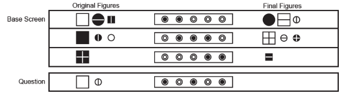
43. Resolver:

44. Resolver:
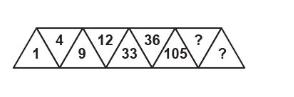
45. Resolver:
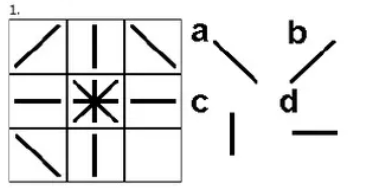
46. Resolver:
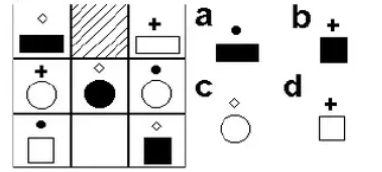
47. Resolver:
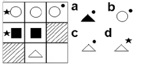
48. Resolver:
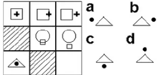
49. Resolver:
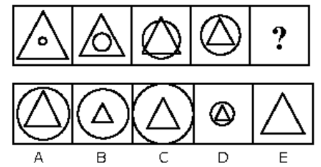
50. Resolver:
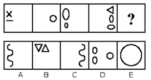
51. Resolver:
Cuatro amigos (Juan, Luis, Pedro y Carlos) se ubican alrededor de una mesa circular simétricamente. De lo anterior se sabe que
• Los cuatro usan gorro de diferente color (azul, rojo, verde y blanco).
• Juan está frente al que usa gorro rojo.
• Pedro no se sienta junto a Juan.
• Carlos, el de gorro azul y el de gorro verde viven en la misma calle.
¿Quién está frente a Luis y qué color de gorro usa?
52. Resolver:
Se tienen 28 esferas de igual apariencia y peso, a excepción de una de ellas que pesa menos. ¿Cuántas pesadas se deberán realizar como mínimo en una balanza de dos platillos para obtener la esfera de menor peso?
53. Resolver:
Se han colocado cuatro dados, de tal manera que en cada dado las caras opuestas suman siete. ¿Cuánto suman en total las caras no visibles?
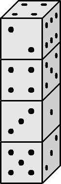
54. Resolver:
Cuatro padres, cada uno con su hija, desean cruzar a la otra orilla de un río. El único bote disponible solo da cabida para tres personas. Si las hijas se niegan, en ausencia de sus padres, a estar en compañía de otro varón, ¿cuántos viajes como mínimo se realizarán en total para que todos puedan cruzar?
55. Resolver:
En la figura se muestra un dado convencional que debe rodar por el camino mostrado, formado por cuadraditos congruentes a las caras del dado, sin deslizarse en ningún momento y apoyada siempre en una de sus aristas. ¿Cuál será el número de puntos de la cara superior del dado cuando se ubique sobre el cuadradito sombreado?
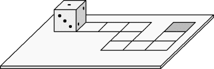
56. Resolver:
En el gráfico, se tiene una ruma de monedas de un sol y 6 monedas de un sol sobre la mesa. ¿Cuántas de las monedas de la ruma pueden ubicarse como máximo alrededor y en contacto con las monedas ubicadas sobre la mesa?
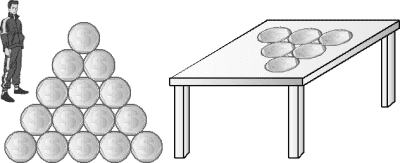
57. Resolver:
La siguiente tabla muestra los goles a favor (GF) y los goles en contra (GC) de los equipos que participan en un triangular, aunque por descuido algunas estadísticas no fueron colocadas. ¿Cuál fue el resultado del partido Alianza Lima - Universitario si este último perdió por 3 goles de diferencia?
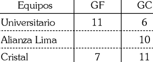
58. Resolver:
al copiar de la pizarra la expresion sen40 - sen20;
un estudiante cometio un error y escribio cos40 - cos20. calcule la razon entre lo que estaba escrito en la pizarra y lo que copio el alumno
59. Resolver:
En cada casilla donde hay un número, hay una casa o un árbol. Donde no hay número, no va ni casa ni árbol. En cada casilla donde hay una casa, el número indica cuántos árboles tiene a su alrededor, y en cada casilla donde hay un árbol, el número indica cuantas casas tiene a su alrededor. Los alrededores de una casilla son sus vecinas inmediatas, en horizontal, vertical y diagonal. ¿Cuántas casas y cuántos árboles hay en total, respectivamente?
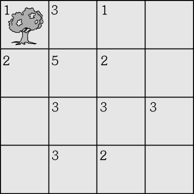
60. Resolver:
calcule todos la suma de los valores naturales que verifiquen esta inecuacion
61. Resolver:
En una cajita de forma cúbica de 10cm de lado, caben 988 bolitas de cristal, el volumen
que estas ocupa es el 89% del cubo, el resto son los intersticios. En esas condiciones
calcular el radio de cada una de las bolitas (esferas)
62. Resolver:
Un cilindro perforado en forma cilíndrica,
como muestra la figura, el volumen restante
del sólido es 0,30pies 3
. Calcular el diámetro
“D” en centímetros.
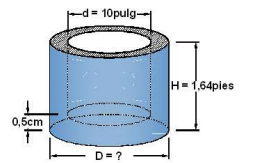
63. Resolver:
Dos vectores fuerzas cuyos módulos es de 72N y 56N forman entre si un ángulo de 56° en
los huesos húmero y radio de una persona en el instante que hace una fisioterapia.
Determinar el vector suma o la fuerza resultante de las fuerzas en la posición mostrada.
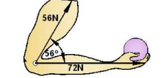
64. Resolver:
En la figura adjunta se representa un par de momento Μ 1 = 40 k-m que actúa sobre un
plano horizontal y otro par de momento Μ 2 = 120 k-m que actúa sobre un plano que forma 60º con
el horizontal. Determinar gráficamente el momento resultante M de ambos pares
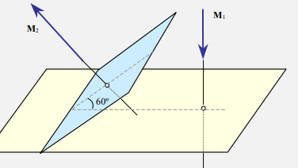
65. Resolver:
Se le cita a un estudiante a las 10 de la mañana a la Universidad. Si parte de su casa a 2
km/h, llega 2 horas más tarde, pero si va a 4 km/h llega 3 horas antes. ¿Con qué rapidez o
velocidad debe caminar para llegar a la hora exacta?
66. Resolver:
Un jugador de futbol se encuentra a 70 metros de la portería contraria y en pocesión del balón, observa que el guardameta se encuentra fuera del área y estima que le tomará al menos 5 segundos el regresar al arco. Si el jugador golpea el balón a con respecto al suelo. Encuentra velocidad a la que debe golpear el balón para que este entre en la portería.
67. Resolver:
Dentro de un helicóptero se encuentra un dinamómetro del cual pende un bloque de 6kg de
masa. Determínese: a) La lectura del dinamómetro cuando él está en reposo y b) La lectura
del dinamómetro cuando está ascendiendo con una aceleración de 3m/s 2
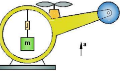
68. Resolver:
Una enfermera va dentro del ascensor que se mueve verticalmente hacia abajo y arriba. La
persona de 900N de peso se encuentra de pie sobre una balanza. Calcular la lectura de la
balanza, cuando el ascensor asciende y desciende con una aceleración constante de 1,5m/s 2
.
(g =9,81m/s 2
)
69. Resolver:
Un motor consume una potencia de 4HP y es capaz de elevar un bloque de 33kg de masa a
razón de 8m/s. ¿Cuál la eficiencia del motor? (g =9,81m/s2
)
70. Resolver:
Una escalera mecánica esta diseñada para transportar 72 personas por minuto. La masa
promedio de cada persona es de 66kg y la velocidad de la escalera es constante y es de
0,64m/s. Determinar la potencia requerida en HP. (g =9,81m/s 2
)
71. Resolver:
El oído humano percibe sonidos cuyas frecuencias están comprendidas entre 20 y 20000Hz.
Calcular la longitud de onda de los sonidos extremos, si el sonido se propaga en el aire con la
velocidad de 340m/s.
72. Resolver:
Una sala del tesoro público tiene un sistema de alarma que es sensible a los rayos
infrarrojos. La alarma sonará si detecta ondas cuya longitud se de 24μm. ¿qué frecuencia en
tera Hertz deberán tener las ondas de calor emitidas por los intrusos, para que sean detectados
por el sistema?
73. Resolver:
La esfera hueca mostrada de 200kg y 0,2m 3
está atado al fondo de un tanque que contiene
un líquido de densidad 1500kg/m 3
. Determinar la tensión en el cable. Tomar g = 10m/s 2
.
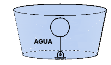
74. Resolver:
Calcular la presión manométrica del tanque de agua considerando que la boquilla de la
manguera es muy pequeño y el chorro de agua sale con una velocidad de 10m/s. tomar g =
10m/s2
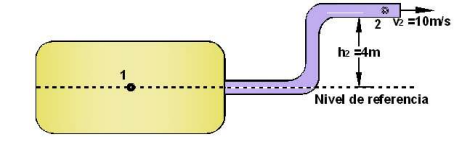
.
75. Resolver:
A una placa metálica de α = 5x10 -6
°C -1
, se le extrae un circulo de 5cm de radio a 0°C.
Calcular el radio del hueco a 500°C.
76. Resolver:
Se desea crear un termómetro graduado en la facultad de medicina en una escala S, en el
cual la temperatura de fusión del hielo corresponde a-20 °S y la ebullición del agua a 170 °C.
Si la temperatura de ebullición del etanol es de 80°C. ¿Cuál es la temperatura en la nueva
escala?
.
77. Resolver:
Dos esferas de están suspendidas la una encima de la otra y separadas por una distancia
de 0,5 m. La inferior tiene una carga de 2*10 -12 C y una masa de 2,5*10 -4 kilogramos. ¿ Cuál
debe ser la carga de la esfera superior para que eleve la esfera inferior?.
78. Resolver:
Dos cargas de 5 *10 -6 Coulomb están separados por una distancia de 0,5 m en el aire.
Cuál es el valor de la fuerza
79. Resolver:
De los siguientes enunciados:
I) La temperatura de fusión depende de la presión exterior.
II) El paso de vapor a sólido se llama sublimación.
III) El calor de fusión representa la cantidad de calor que se debe dar a la unidad de masa de alguna sustancia que ya ha alcanzado su punto de fusión, para transformarlo en líquido, a la misma temperatura.
80. Resolver:
La cabina de un ascensor de 4 m de altura comienza a elevarse con una aceleración igual a 8 m/s². Sí a los 2,5 segundos, después del inicio de la ascensión, del techo de la cabina se desprende un perno; entonces el tiempo, en segundos, de la caída libre del perno hasta que llegue al piso del ascensor es:
81. Resolver:
La nomenclatura química (símbolos y fórmulas) se basa en un conjunto de reglas que se aplican para nombrar y representar sustancias químicas. Emplee el sistema de nomenclatura de tipo tradicional y seleccione el nombre del compuesto (óxido básico) formado como producto de la máxima oxidación del hierro y los procesos de corrosión metálica.
82. Resolver:
El yodo se encuentra en el mango, rabanitos, sal yodada y alimentos marinos. En los niños, la deficiencia de este elemento produce retraso en sus capacidades cognitivas. Determine a qué grupo y periodo, respectivamente, pertenece el yodo.
83. Resolver:
El proceso de potabilización es importante para obtener el tipo de agua que permita ser consumida por la población sin que le genere daños. Con respecto a la potabilización del agua, seleccione la(s) proposición(es) correcta(s).
I) El cribado consiste en la separación de partículas de pequeño tamaño.
II) El uso de coagulantes permite disminuir la turbidez en el agua.
III) La cloración contribuye la formación de microorganismos como las bacterias.
84. Resolver:
El cianuro de hidrógeno es un gas venenoso. La dosis letal es aproximadamente 300 mg por kg de aire inhalado y se produce por la reacción química
2NaCN(s)+ H2SO4(ac) → Na2SO4(ac)+ 2HCN(g)
¿A qué tipo corresponde la reacción anterior?
85. Resolver:
El CO 2 gaseoso de un extintor de fuego es más denso que el aire. El CO2 se enfría considerablemente cuando sale del tanque. El vapor de agua del aire es condensado por el CO2 gaseoso frío y forma una niebla blanca que acompaña al CO2 incoloro. Si se tiene un tanque de 3 litros a una presión de 4,1 atmósferas y a una temperatura de 27ºC, determine la masa, en gramos, de dióxido de carbono.
86. Resolver:
El ozono se considera un contaminante químico. Una forma de determinar su concentración es pasándolo por un generador de burbuja que contiene como reactante una sal haloidea, la cual elimina el ozono de acuerdo con la reacción química
O3(g)+2NaI(ac)+H2O(ℓ)→O2(g)+ I2(s)+NaOH(ac)
Al respecto, establezca el valor de verdad (V o F) de las siguientes proposiciones:
I) La suma de coeficientes de la ecuación química es 8.
II) Para purificar 10 moles de ozono se necesita 3 kilogramos de sal.
III) La sal haloidea presente en los reactantes es el yoduro de sodio.
87. Resolver:
La neutralización es el proceso en el que la cantidad de equivalentes gramos, tanto del ácido como de la base, son exactamente iguales. Se tiene 400 mL de una solución de hidróxido de sodio 0,2 N. A esta solución se le añade 1200 mL de agua destilada. Determine la molaridad de la nueva solución, luego de la adición de agua destilada. A 20 mL de esta dilución, se le agrega 50 mL de ácido clorhídrico para neutralizarlo. ¿Cuál es la concentración del ácido utilizado, en normalidad?
88. Resolver:
El cesio es un elemento metálico con un radio atómico de 2,25Å , presenta un punto de fusión de 28°C, una densidad de 1,88 g/cm 3, y tiende a ser el más reactivo de los metales alcalinos. Respecto a las propiedades del cesio, seleccione el valor de verdad (V o F) de las siguientes proposiciones:
I) Al presentar una masa de 3,76 kg, tiene un volumen de 2×10 -3 m³.
II) Si aumenta la temperatura de 28°C a 48°C, la variación de temperatura es 36°F.
III) Si colocamos 10 átomos de cesio, uno al lado del otro, la longitud es de 4,5 nm.
89. Resolver:
La industrialización de los países conlleva a la liberación de gases que incrementa la temperatura de la atmósfera, produciendo una serie de efectos negativos. Con respecto al calentamiento global, seleccione el valor de verdad (V o F) de las siguientes proposiciones:
I) Este fenómeno se debe al incremento la emisión gases como por ejemplo el CO2, H2O y CH4, producto de las actividades antrópicas.
II) El efecto invernadero es producido por la capacidad de absorción de ciertos gases de radiaciones infrarrojas irradiadas en la estratósfera.
III) Produce el cambio climático, y posibilita también cambios de relieve por el deshielo de glaciares.
90. Resolver:
El ácido sulfúrico es un ácido fuerte y es el más utilizado en la industria. Si se tiene una solución de H2SO4, cuya concentración es 1,0×10 -1M, determine cuántos mL de ácido se necesita para neutralizar 0,5 L de hidróxido de sodio 2,0×10 -1 M.
91. Resolver:
Determine los micromoles de leucocitos que contiene.
La sangre es un líquido que circula por arterias, capilares y venas del cuerpo. Se compone de una parte líquida (plasma) y de células en suspensión (eritrocitos, leucocitos y plaquetas). Asumiendo que una persona adulta tiene 6,0 litros de sangre y si al analizar la misma el resultado es
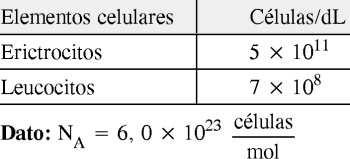
92. Resolver:
El tanque de combustible de un auto es alimentado con 8,6 litros de gasolina (considerar que la gasolina contiene solo moléculas de C 6H 14 ). Esta cantidad de gasolina realiza una combustión completa según la ecuación química:
2C 6H 14(ℓ)+19O 2(g)→12 CO 2(g)+14H 2O (v)
Determine el volumen de dióxido de carbono, m3, medido a condiciones normales y liberado como producto de la combustión de la gasolina.
Datos:
Densidad de la gasolina=0,7 g/mL
peso molecular de C 6H 14= 86 g/mol
93. Resolver:
La contaminación contribuye a generar enfermedades y otros daños a los diversos seres vivos, el monóxido de carbono (CO) atmosférico, el ozono (O 3 ) presente en la tropósfera, los gases de nitrógeno, entre otros. Con respecto a la contaminación y a los contaminantes, seleccione la(s) proposición(es) correcta(s).
I) El monóxido de carbono es un contaminante primario, es emitido como producto de los procesos de combustión incompleta.
II) Una tormenta eléctrica puede generar ozono (O 3 ), esto es considerado una contaminación de tipo natural.
III) Los contaminantes secundarios pueden ser los gases como los óxidos de nitrógeno y el ácido nítrico (HNO 3 ).
94. Resolver:
Mantener un pH adecuado en la boca es bueno para los dientes y es esencial para una buena salud general. La saliva humana sana, sin carga microbiana, tiene un pH de 7,4 igual que la sangre. Cuando se consumen alimentos y bebidas azucarados, se desmineraliza el esmalte de los dientes. Esto ocurre cuando el pH de la boca es menor de pH 5,5. Juan L., un adulto mayor, que consume muchos caramelos al día, presenta en su saliva un pH igual a 4. De acuerdo con la información, respecto del pH, establezca el valor de verdad (V o F) de los siguientes enunciados:
I) A pH 7,4, la concentración de iones H3O+ es menor que a pH 5,5.
II) El pH de la saliva y el de la sangre humana sana son ligeramente ácidas.
III) El esmalte de los dientes se deteriora a concentraciones altas de H 3O +.
IV) La concentración de los [OH] - en la saliva de Juan L. es 10 -4 mol/L.
95. Resolver:
Los gases NO 2 y N 2O 4, están en equilibrio, según la reacción N2O 4(g) ⇄ 2NO 2(g). Cuando el sistema está frío, no se observa color (incoloro), lo cual indica que se tiene gas N2O4, en mayor proporción. Si el sistema está caliente se observa una coloración marrón, lo cual indica mayor cantidad de gas NO2,Para la reacción mostrada, es correcto afirmar que si
96. Resolver:
La flotación es un proceso fisicoquímico utilizado ampliamente por la industria metalúrgica de nuestro país y consiste en concentrar elementos metálicos para su posterior refinación. Una empresa minero metalúrgica procesa por flotación una mena de 1000 toneladas de esfalerita (ZnS) (mineral valioso + ganga). Terminado el proceso (ver gráfico adjunto), se obtiene 100 toneladas de concentrado. Si se toma en cuenta que en el relave (residuo de la flotación) no hay presencia de zinc, determine el porcentaje en masa de zinc y los kilomoles de zinc presentes inicialmente en la mena.
97. Resolver:
Se tiene una muestra de agua acidulada para realizar un proceso electrolítico, siendo sometido el sistema a una carga total de 40 Faraday; en dicho proceso, se obtienen gases en cada electrodo como producto de la reducción y oxidación, los cuales están bajo condiciones normales (C.N.). Calcule los gramos del gas liberado en la zona catódica y el volumen en litros liberado en la zona anódica, respectivamente.
98. Resolver:
Los cicloalcanos o alcanos cíclicos son hidrocarburos saturados que se encuentran en el petróleo, determine su fórmula global.
99. Resolver:
Un cuadro de fenilcetonuria PKU (por sus siglas en inglés) en un recién nacido es grave, debido a que carece de la enzima que degrada a le fenilalanina. Establezca el valor de verdad (V o F) de las siguientes afirmaciones referidas al aminoácido que se presenta a continuación:
I. Su estructura tiene 10 electrones no enlazantes.
II. Se nombra: ácido 2 - amino - 3 - fenilpropanoico.
III. Presenta 6 carbonos con hibridación sp 2.
100. Resolver:
El naftaleno es un hidrocarburo aromático, llamado también nafteno o naftalina, se usa como repelente de polillas. Tiene dos estructuras resonantes y la combinación de estas nos da el híbrido de resonancia. Determine el número de electrones pi (𝛑) de su estructura.